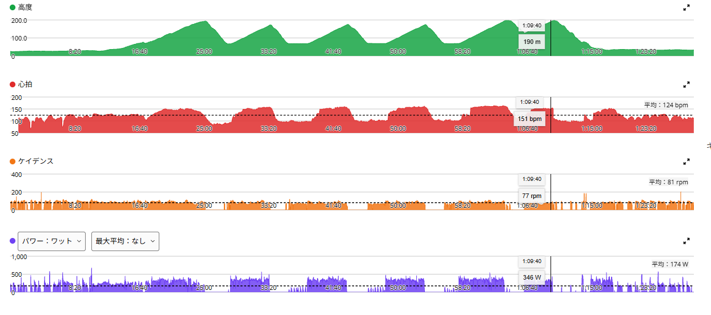

久しぶりにANCHORで高強度。数字より先に、機材の違いを感じた
今日はAethos2がパンク中なので、久しぶりにANCHOR RNC7で唐沢ゴルビーへ。月曜まではANCHORで走る予定である。普段、高強度はAethos2でやることが多い。9月4日にANCHORで唐沢を踏んだ日はあったが、5分×5本のゴルビーとなると久しぶりである。
同じようなメニューをANCHORでやると、想像以上に乗り味の違いを感じた。しかもその違いが急に大きくなったのは、余裕がなくなる高強度の場面だった。

全体の負荷は、前回のゴルビーとほぼ同じ
- 全体31.66km / 1時間28分10秒 / 獲得708m / 平均気温22.2℃
- 負荷平均174W / NP254W / IF0.923 / TSS124.5
- 心拍・回転平均124bpm / 最大164bpm / 平均81rpm
- 前回（10月13日・Aethos2）NP256W / IF0.929 / TSS123.1 / 平均気温24.1℃
全体の負荷だけを見ると、3日前にAethos2でやった唐沢ゴルビーとほとんど変わらない。なので、「ANCHORだから全然走れなかった」という話ではない。

5本を並べると、2〜4本目はほぼ同じ
- 1本目Aethos2 316W・90rpm → ANCHOR 303W・86rpm
- 2本目Aethos2 325W・86rpm → ANCHOR 328W・81rpm
- 3本目Aethos2 324W・87rpm → ANCHOR 325W・78rpm
- 4本目Aethos2 334W・91rpm → ANCHOR 330W・82rpm
- 5本目（頂上まで）Aethos2 5分24秒・351W・90rpm → ANCHOR 5分54秒・329W・84rpm
1本目は、ANCHORなので、Aethos2のときと同じ数字は最初から追わず、少し低めから入った。そこから2〜4本目は328W・325W・330Wで、前回とほぼ同じ。1〜4本目の平均で見ても、前回の約325Wに対して今日は約322Wである。主観ではAethos2との差をかなり感じていたので、数字を見て少し意外だった。体感としては違う。でも、5分高強度の出力そのものは思ったより維持できていた。
差が出たのは5本目。前回は約5分半・351W、今日は約6分・329W。ただ、今回は車体もパワーメーターもギア構成も違う。単純に「ANCHORだから22W落ちた」とは考えない。
いちばん気になったのは変速
今日いちばん強く感じたのは、変速のスムーズさだった。Aethos2はRED AXS。余裕がない高強度でも、変速がスッと決まる。一方のANCHORは9000 DURA-ACE。今のギア構成との組み合わせでは、段によって「ガゴッ」と入る感じがある。
5分高強度の途中で呼吸も脚も余裕がないときは、この少しの違和感がかなり大きく感じる。「あと1枚だけ軽くしたい」「今のギアだと少し重い」というときに、変速が気持ちよく決まらないと、それだけでストレスになる。
ギアの刻みと、約2kgの車重
Aethos2とANCHORでは、チェーンリングもスプロケットも違う。同じ勾配でも、選べるギア比が違う。今日のケイデンスは前回の90rpm前後より全体に低めだったが、これもギア比が違う以上、単純には比べられない。ちょうど欲しいところにギアがない場面があり、少し重いギアを踏むか、少し軽いギアで回すかの二択になる。その刻みの違いも、高強度になるとかなり気になる。
車重はANCHORの方が2kg近く重い。登りで高出力を出しているときや、勾配の変化に合わせて加速する場面では「あ、重いな」と感じる。唐沢山のように何度も登り返して高強度を繰り返すと、その差が少しずつ効いてくる感じがあった。
ANCHORが悪いのではなく、追い込んだときほど違いが分かる
ここまで書くと、ANCHORに不満があるように見えるかもしれない。でも、そういう話ではない。高強度をやらなければ、今日感じた違いの多くはそこまで気にならない。普通に走るなら、今でも十分楽しく走れる。そもそもAethos2とANCHORでは価格も世代も全然違う。ハイエンドのAethos2と、昔から乗っているANCHORを同じ基準で比べる方が少し違う気もする。
数字だけなら、思ったより差は小さい。でも変速、ギアの刻み、車重を合わせると、高強度での楽さはかなり違った。だから今日の感想は「ANCHORはダメ」ではなく、「ハイエンド機材って、余裕がなくなったときほど違いが分かるんだな」である。久しぶりにANCHORで高強度をやったことで、Aethos2では当たり前になっていた快適さに気づいた。普段は意識しない。でも、追い込んだときに分かる。それが今日の機材差だった。
次に見るポイント
- ANCHORの中で比べる月曜までは、Aethos2の数字と無理に比べない
- ギアの選び方欲しいギアがない場面で、重めを踏むか軽めで回すかを決めておけるか
- 5本目ANCHORでも最後の1本をしっかり出し切れるか